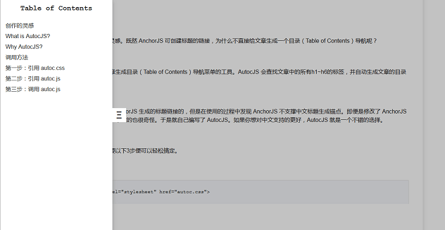

创作的灵感
AnchorJS 是 AutocJS 的创作灵感。既然 AnchorJS 可创建标题的链接，为什么不直接给文章生成一个目录（Table of Contents）导航呢？
What is AutocJS?
AutocJS 是一个专门用来给文章生成目录（Table of Contents）导航菜单的工具。AutocJS 会查找文章中的所有h1~h6的标签，并自动生成文章的目录导航菜单。

Why AutocJS?
其实，一开始 AutocJS 是依赖 AnchorJS 生成的标题链接的，但是在使用的过程中发现 AnchorJS 不支撑中文标题生成锚点。即便是修改了 AnchorJS 中的正则表达式，生成的锚点是中文的也很奇怪。于是就自己编写了 AutocJS。如果你想对中文支持的更好，AutocJS 就是一个不错的选择。
调用方法
AutocJS 的调用很简单，只需要以下3步便可以轻松搞定。
第一步：引用 autoc.css
<link type="text/css" rel="stylesheet" href="autoc.css">第二步：引用 autoc.js
// AutocJS 依赖 jQuery（稍后会开发没有任何依赖的版本）
<script type="text/javascript" src="jquery.js"></script>
// 调用 autoc.js
<script type="text/javascript" src="autoc.js"></script>第三步：调用 autoc.js
// 语法：autoc(selector, prefix);
// 参数：selector（String 类型） - 文章中需要统计的标题的选择器
// prefix (String 类型) - selector 选择的标题要生成的 id 的前缀（默认值：anchor)
autoc('#content h2, #content h3, #content h4, #content h5, #content h6');